The view
Optimized for views
This building should optimize for views. The idea I keep coming back to: sitting outside with nothing between my eyes and the horizon. If that is even possible, it would be great. It may not be possible, or not cost-effective, and safety comes first either way. What I would love is at least one floor that optimizes for the views. It could even be the bottom floor. This page is the thinking so far, offered as a direction to explore with the design team, not a requirement.
Photos from the rim
The view from the parcel
Phone photos from the rim, taken on ordinary evenings. No filters and no drone: this is what standing on the parcel looks like.
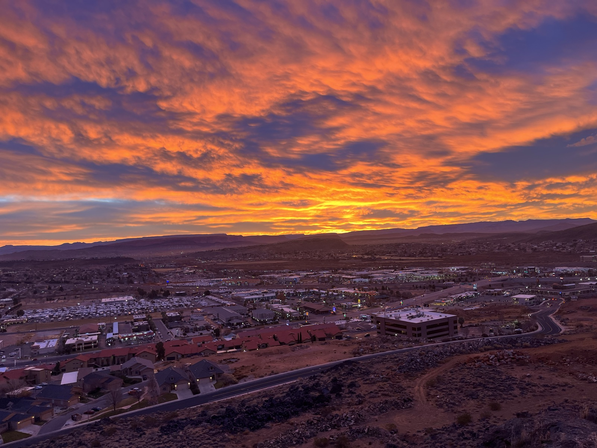
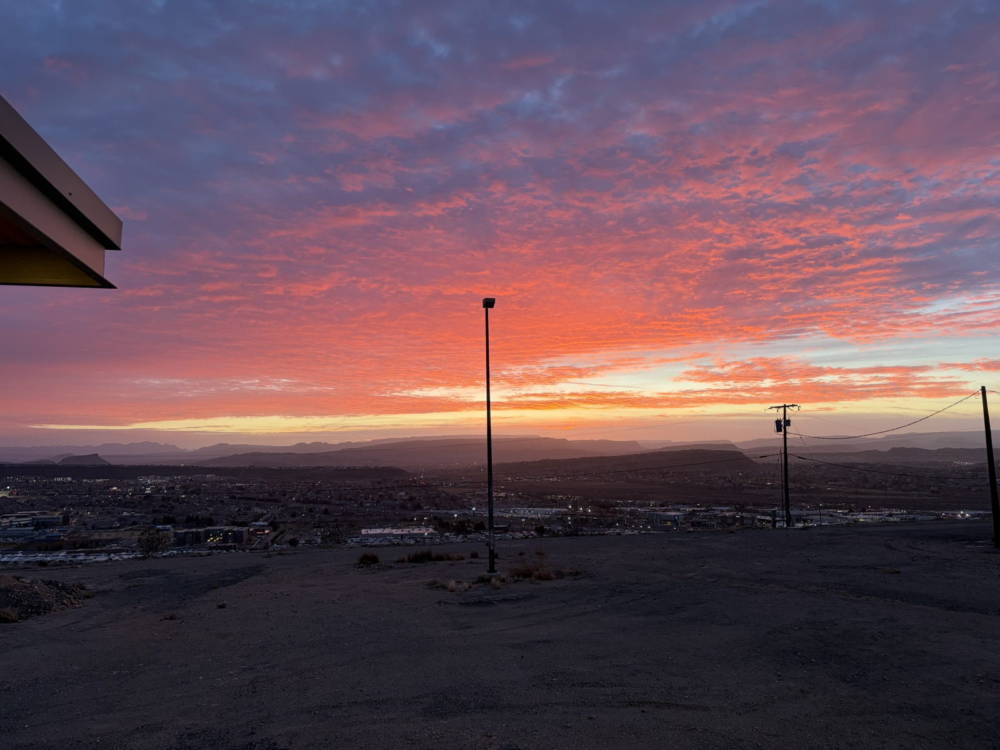
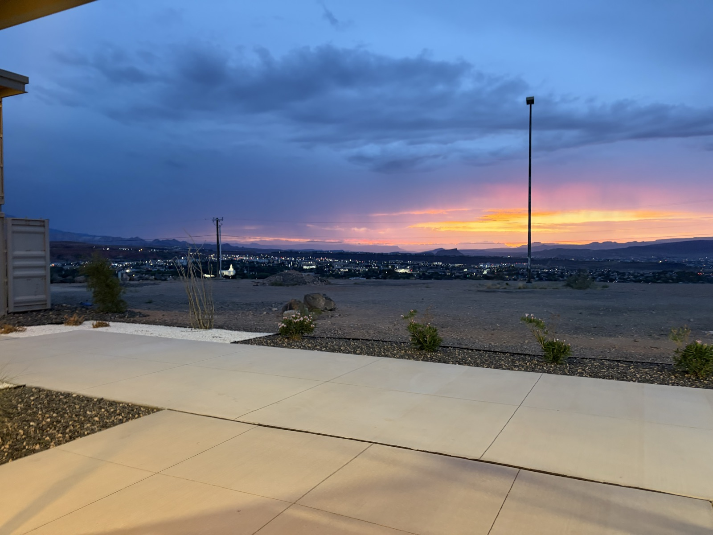
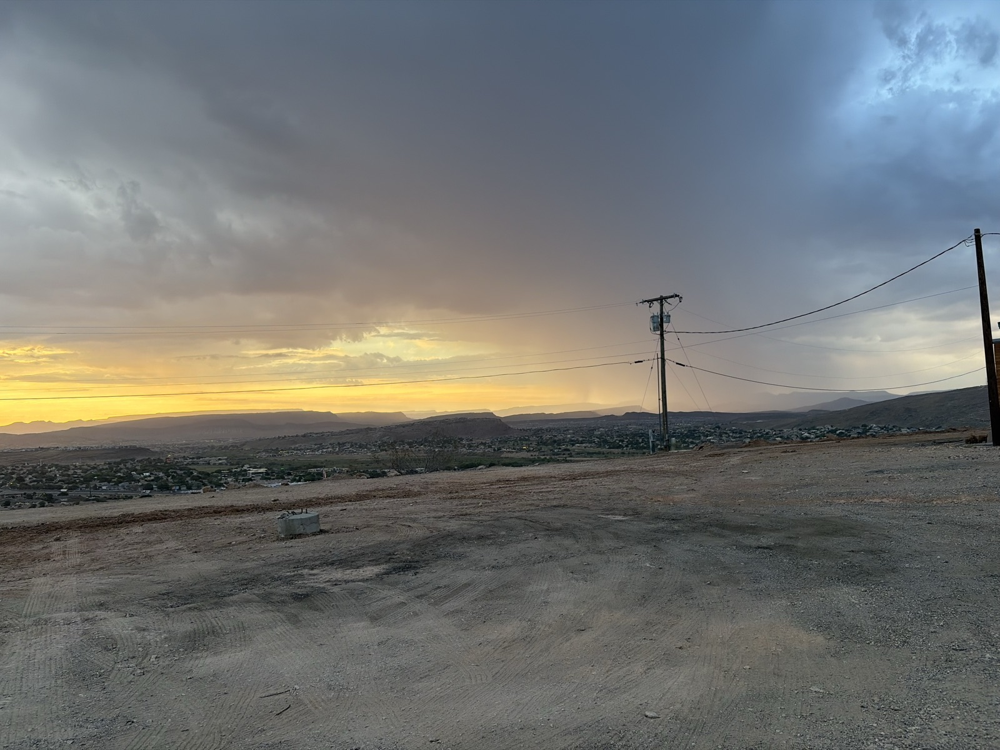
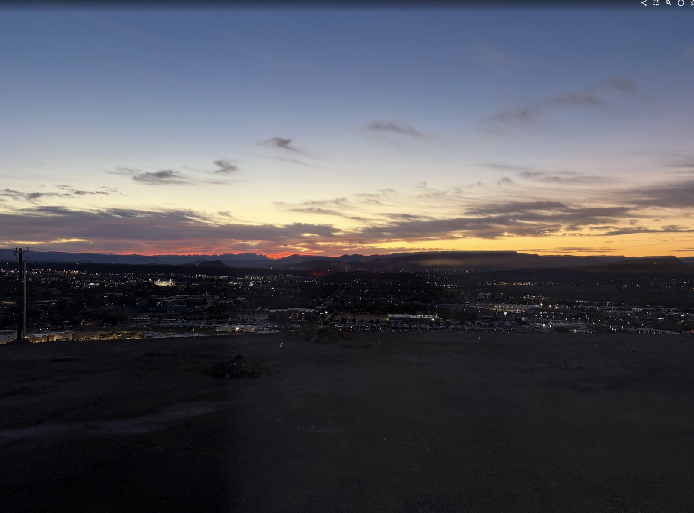
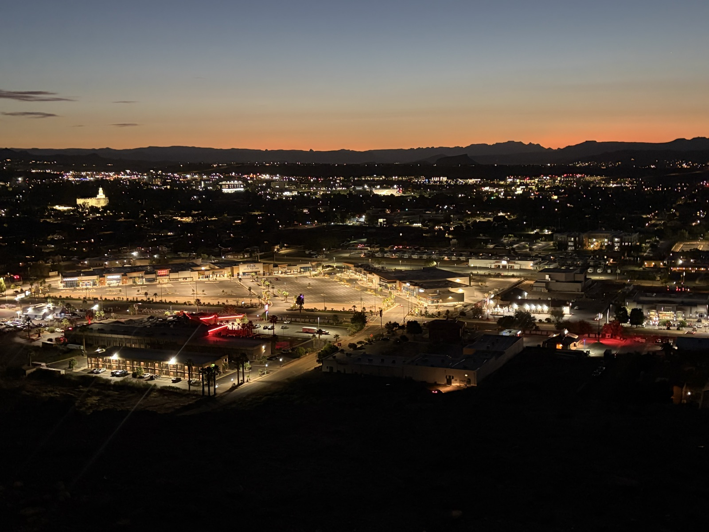
Precedents
The ha-ha
Landscape designers solved this three hundred years ago with the ha-ha: a barrier sunk below the sightline so an estate lawn appeared to run unbroken into the countryside while still keeping livestock out. The stepped terrace is a ha-ha built into a building. Desert resorts such as Amangiri in southern Utah use the same recessed-barrier thinking to hold canyon views without visible railings.
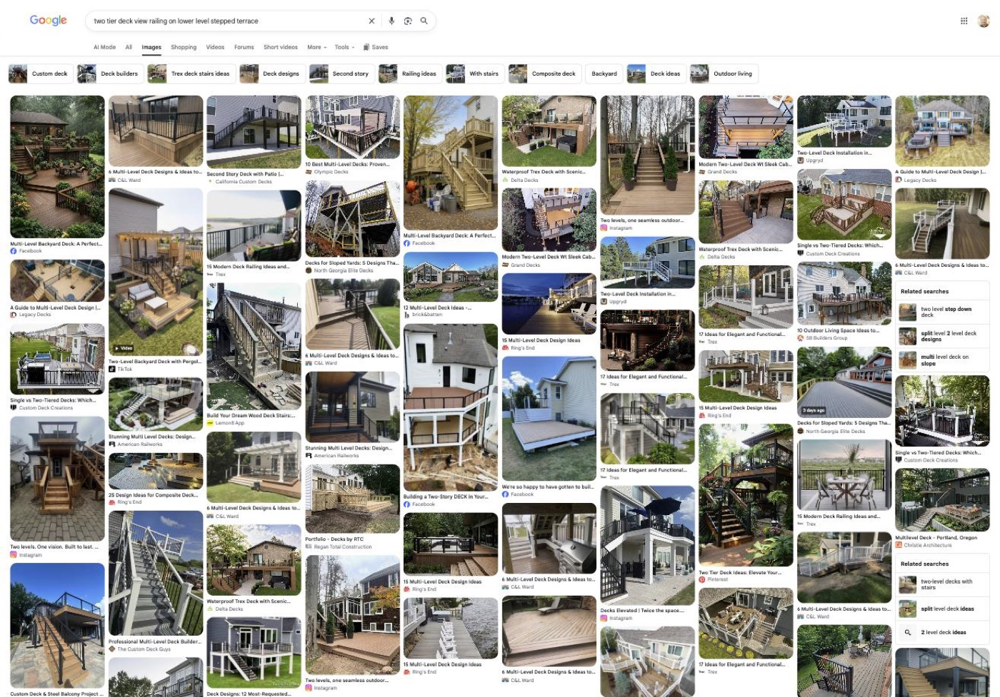
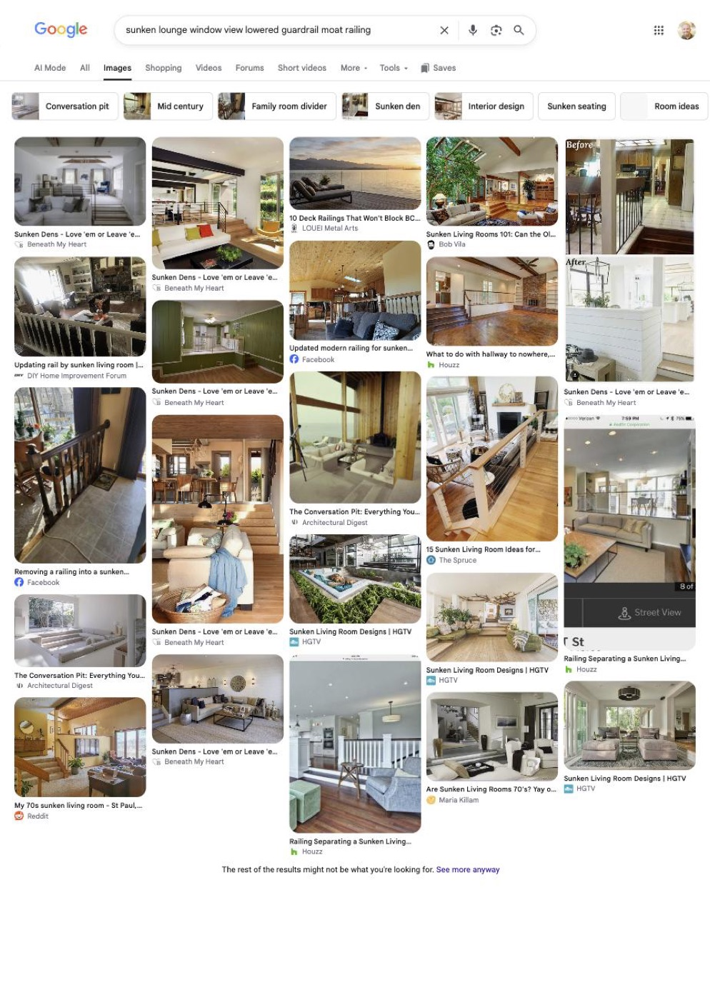
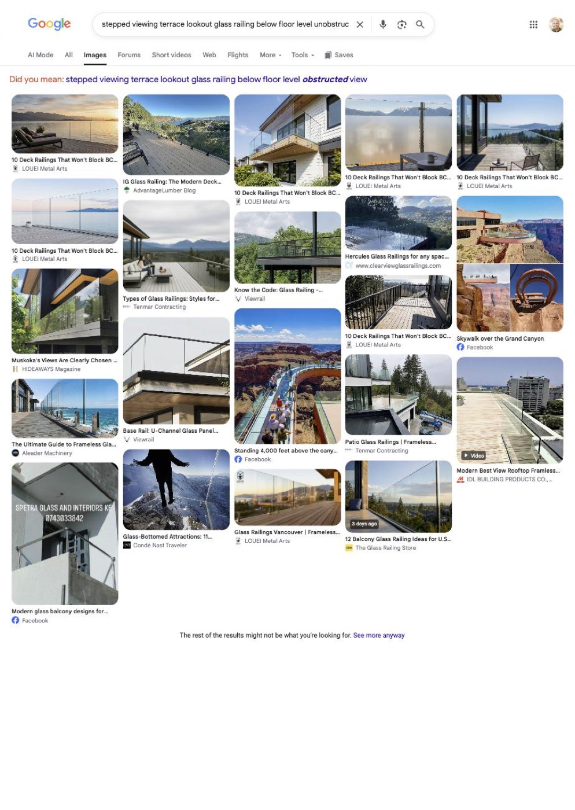
Open questions
Where it could go
The rim zoning steps the building back as it rises, so every setback is a candidate terrace. The top floor is the intuitive candidate, since nothing sits above it and nothing blocks the view side. Whether an unobstructed sightline is possible at all under code and wind, whether the idea belongs on one floor or several, how far the structure can move toward the rim, and whether a completely different answer beats this one: all open, and exactly the kind of question the design team should push back on. If the honest answer is that a visible rail has to be there, the design should make it a good one.
The step-down geometry
Geometry instead of glass
Safety codes require a 42-inch guardrail wherever a drop exceeds 30 inches, so the question became: where does the rail go so it does its job without sitting in the sightline? One answer I like: the terrace steps down toward the edge like a shallow amphitheater. The lounge level sits at the top. Three or four wide steps cascade to a lower landing at the perimeter, and the required guardrail stands there, about three feet below the lounge floor. Its top cap lines up with the floor under your feet. Seated eyes sit 40 to 45 inches above the floor, so the sightline clears the rail. Walk down the steps and the rail is right there at full height. Sit back up top and it reads as horizon.
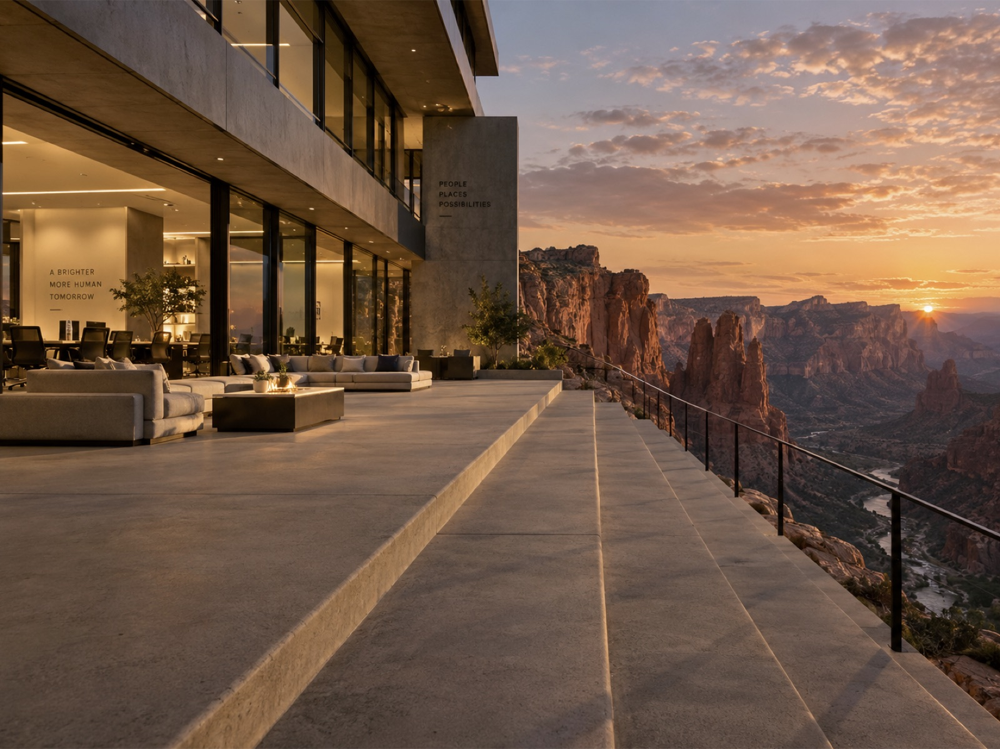
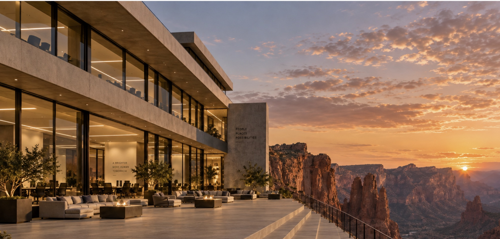
The parcel is the only one on the ridge that meets the rim with no road between. The view is the site's main value, and the current offices already prove the team works outside whenever the building lets them. An edge you can sit at makes the terraces daily workspace instead of a photo backdrop.